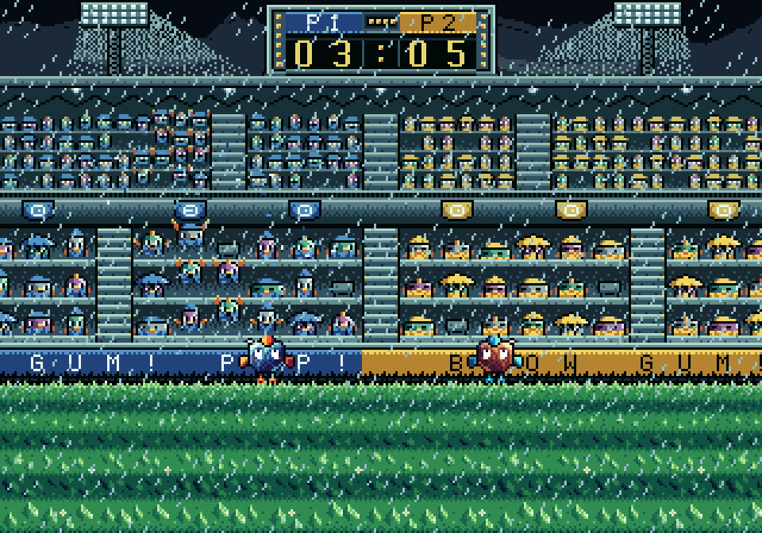
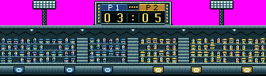
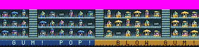
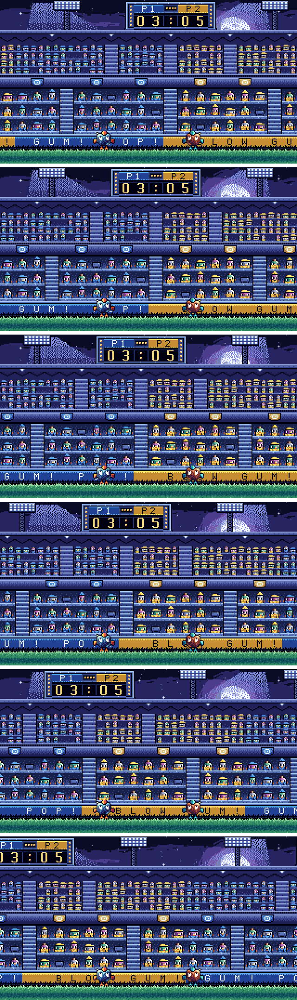
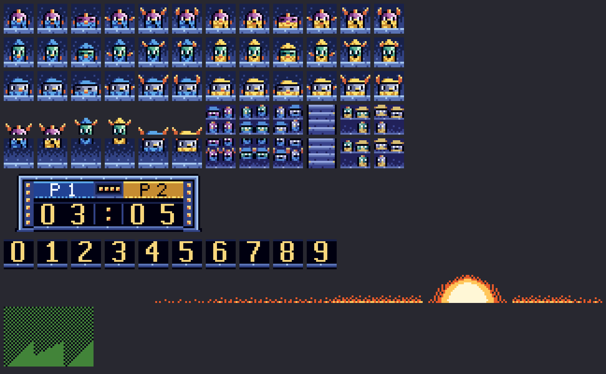

Left of each pair: the approved draft. Right: the polish pass (team clothes on the birds, roof scoreboard, tall cheer jumps, dusk sun light). Numbers and weak points: README.md and numbers.txt in this folder.
Old: Cheer burst: Player 1 side, then Player 2 sideNew: Cheer burst: Player 1 side, then Player 2 side, 64 frames at 70 ms, 3x (preview loop: first 32 frames), 1.3 MB
Old: Stadium waveNew: Stadium wave, 64 frames at 70 ms, 3x (preview loop: first 32 frames), 1.2 MB
Old: Win wave: Player 1 wins, Player 2 side slumps

New: Win wave: Player 1 wins, Player 2 side slumps, 64 frames at 70 ms, 3x (preview loop: first 32 frames), 1.3 MB

New plane: far, 1x (magenta is transparent)

New plane: near, 1x (magenta is transparent)
Gum Fling scroll

Moon, 2x, stands only. Rows 1 to 4: field scroll 0, 64, 128, 192 px with the stands at 1/4 speed (stand shift -24, -8, +8, +24 px). Rows 5 and 6: raw stand shifts of 64 and 128 px, which 1/4 speed never reaches. The team split (centre stairs) stays on screen in every row. The repeat seam shows at the screen edge in rows 1, 4, 5, 6: the 336 px stand is only 16 px wider than the screen.
Hand cells

Rows 1 to 3: near birds a (scarf), b (beanie), c (cap) in six poses, Player 1 blue then Player 2 yellow. Rows 4 and 5: jump peaks across two tiles, far crowd tiles idle and cheer. Rows 6 and 7: scoreboard with the sample score. Row 8: the ten lamp digits. Row 9: dusk roof glow and sun. Rows 10 and 11: dusk turf shadow. Moon palettes, 4x.